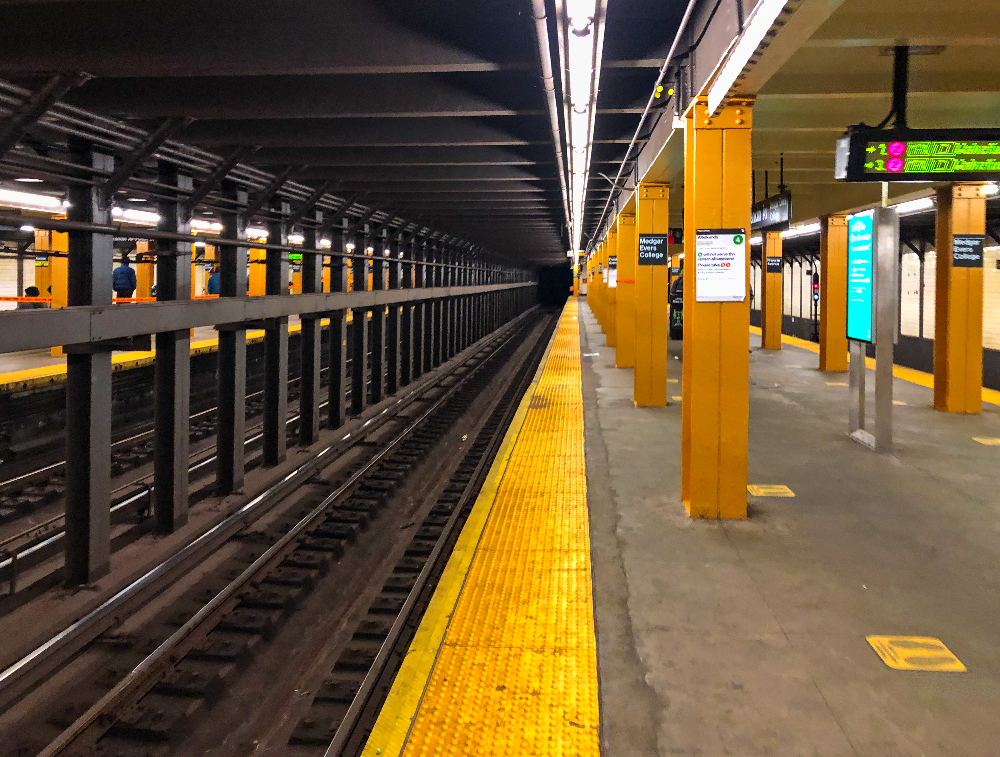

Найкращі пам'ятки світу
Подорожуйте та відкривайте нові місця
Путівник найвідомішими туристичними об'єктами
Ласкаво просимо на сайт-порадник для мандрівників. Тут ви знайдете інформацію про найцікавіші пам'ятки світу, які щороку відвідують мільйони туристів.
Кожне з представлених місць має власну історію, унікальну архітектуру та неповторну атмосферу. Вони заслуговують на те, щоб хоча б раз побувати там особисто.
Порада туристу: перед подорожжю ознайомтеся з історією місця та сплануйте маршрут заздалегідь.
Популярні пам'ятки світу
- Ейфелева вежа, Франція
- Карпати, Україна
- Метро Нью-Йорка, США
Рекомендований маршрут
- Відвідати Ейфелеву вежу в Парижі
- Помилуватися природою Карпат
- Ознайомитися з легендарним метро Нью-Йорка
Корисне посилання
Дізнатися більше про визначні пам'яткиФото пам'ятки


